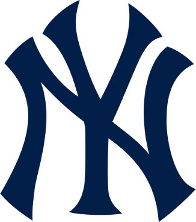
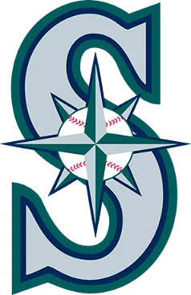

分析中心 › 球隊數據
球隊數據17 個主要聯盟・372 隊
每一隊一頁，整理這一隊本季在台灣運彩的完整紀錄：讓分、大小的過盤率，PK／讓分／大小／單雙路單，每場比分與盤口，主客場、背靠背這些情境的表現，還有接下來的比賽。聯盟頁另外有官方戰績、近期賽果與整個聯盟的盤路特性。
🏀籃球NBA
東區
西區
其他籃球聯賽18 個聯賽・236 隊・11/12 起收錄，每隊場數還少
日本職籃B League
23 隊歐洲籃球聯賽
20 隊🏒冰球NHL
東區
西區
其他冰球聯賽13 個聯賽・210 隊・11/12 起收錄，每隊場數還少
美國冰球聯盟
31 隊俄羅斯超級冰球聯盟
29 隊大陸冰球聯盟
22 隊Extraliga - Czechia
14 隊⚽️足球英超・西甲・義甲・德甲・法甲・歐霸・亞冠・英冠・美職足・日職聯・韓K聯・澳A
東亞區
西亞區
東區
西區
其他足球聯賽77 個聯賽・1067 隊・11/12 起收錄，每隊場數還少
歐洲國家聯賽
52 隊西班牙皇家足協甲級聯賽
37 隊歐洲協會聯賽
28 隊英格蘭乙級聯賽
24 隊英格蘭甲級聯賽
24 隊英格蘭國家聯賽
24 隊西班牙乙級聯賽
22 隊土耳其甲級聯賽
20 隊巴西甲級聯賽
20 隊日本乙級聯賽
20 隊埃及超級聯賽
20 隊德國丙級聯賽
20 隊巴西乙級聯賽
18 隊亞洲冠軍二級聯賽
18 隊波蘭甲級聯賽
18 隊哥倫比亞甲級聯賽
18 隊波蘭超級聯賽
16 隊俄羅斯超級聯賽
16 隊烏拉圭甲級聯賽
16 隊捷克足球乙級聯賽
16 隊奧地利乙級聯賽
16 隊賽普勒斯甲級聯賽
12 隊法國盃
1 隊阿根廷盃
1 隊阿根廷超級盃
1 隊⚾️棒球MLB・日職・中職
美國聯盟
坦帕灣光芒

紐約洋基波士頓紅襪巴爾的摩金鶯多倫多藍鳥克里夫蘭守護者芝加哥白襪明尼蘇達雙城底特律老虎堪薩斯皇家休士頓太空人德州遊騎兵
西雅圖水手運動家洛杉磯天使國家聯盟
中央聯盟
太平洋聯盟
盤路是過去的紀錄，每場比賽各自獨立，不代表下一場的結果。賠率與賽果以台灣運彩官網為準。